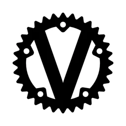

01
Le coffre de toute la famille
Un compte par personne, et une organisation pour partager le Wi-Fi, Netflix ou la banque : chacun voit seulement ce qu'il doit voir.
OrganisationsCollections

Ton gestionnaire de mots de passe gratuit et open source, installé chez toi : tu gardes les applis officielles Bitwarden, et tes mots de passe restent chiffrés sur ton serveur.

Vaultwarden est un serveur de mots de passe gratuit et open source, écrit en Rust et très léger, que tu installes sur ta propre machine (un NAS, un mini PC, un Raspberry Pi). Il parle le même langage que Bitwarden : tu utilises donc les applis officielles Bitwarden (extension du navigateur, appli mobile, appli PC, coffre web) en leur donnant l'adresse de ton serveur au lieu de celle de Bitwarden. Le chiffrement se fait sur tes appareils : ton serveur ne stocke que des données chiffrées. Vaultwarden est non officiel : il n'a aucun lien avec l'entreprise Bitwarden.
Avec Docker (Container Manager sur Synology, Docker sur QNAP, Unraid…). Image officielle vaultwarden/server, avec le coffre web déjà inclus.
RecommandéDocker ou docker compose sur Linux : c'est la méthode recommandée par le projet. Il consomme très peu, un petit Raspberry Pi suffit pour une famille.
RecommandéTu installes les applis officielles Bitwarden et tu choisis « auto-hébergé » à la connexion, avec l'adresse de ton serveur. Elles ont toutes besoin de ton serveur.
Les applisUn compte par personne, et une organisation pour partager le Wi-Fi, Netflix ou la banque : chacun voit seulement ce qu'il doit voir.
Tu t'inscris sur un site : l'extension crée un mot de passe solide, l'enregistre, puis le remplit tout seul sur ton téléphone.
Les codes à 6 chiffres sont générés dans le coffre, à côté du mot de passe, et copiés automatiquement au moment de te connecter.
Avec Send, tu partages un mot de passe ou un fichier par un lien qui expire tout seul, au lieu de l'écrire dans un message.
Un proche de confiance peut demander l'accès à ton coffre en cas de problème, après un délai que tu choisis.
Projet communautaire lancé en 2018 (ex-bitwarden_rs), avec des versions publiées presque chaque mois et un audit public du BSI allemand en 2024. Le chiffrement se fait sur tes appareils. À savoir : il est non officiel, et c'est à toi de gérer le HTTPS, les mises à jour et les sauvegardes.
Dernière version 1.37.5 (1er novembre 2026), précédentes en octobre et septembre 2026 ; commits encore le 14 novembre 2026.
GitHub affichait 70 738 étoiles et environ 3 460 forks le 14 novembre 2026 ; communauté active sur Matrix, GitHub Discussions et un forum. Le README officiel précise qu'un des mainteneurs actifs est employé par Bitwarden, qui l'autorise à contribuer sur son temps personnel ; ses contributions sont relues par les autres mainteneurs.
Coffre chiffré sur tes appareils puis stocké sur ton serveur ; seules les notifications mobiles, si tu les actives, passent par le service de Bitwarden.
Gratuit et open source, porté par des bénévoles ; pas d'offre payante ni de société derrière, et il dépend des applis de Bitwarden.
Huit ans d'existence, audit du BSI (2024) et test d'intrusion publié ; mais non officiel, et HTTPS, mises à jour et sauvegardes sont à ta charge.
Comment on note : 5 critères notés sur 5, vérifiés sur GitHub, le README officiel, le wiki du projet et le journal des versions le 14 novembre 2026. La note sur 10 est la moyenne ramenée sur 10.
Bon pour : Toute la famille, fonctions premium incluses, rien chez une entreprise
Bon pour : Les mêmes applis, sans serveur à gérer
Bon pour : Une appli très soignée, si l'abonnement ne te gêne pas
Bon pour : Tout-en-un avec VPN et surveillance du dark web
Bon pour : Une personne, sans serveur, si tu gères la synchro
Ton coffre devient la clé de tous tes comptes : HTTPS obligatoire, mises à jour régulières et sauvegardes stockées ailleurs, sinon tu risques de tout perdre.
Code source, installation et documentation officielle : tout est là.

Chaque vidéo RepoPop t'explique un dépôt GitHub utile en moins d'une minute, avec son kit comme celui-ci.